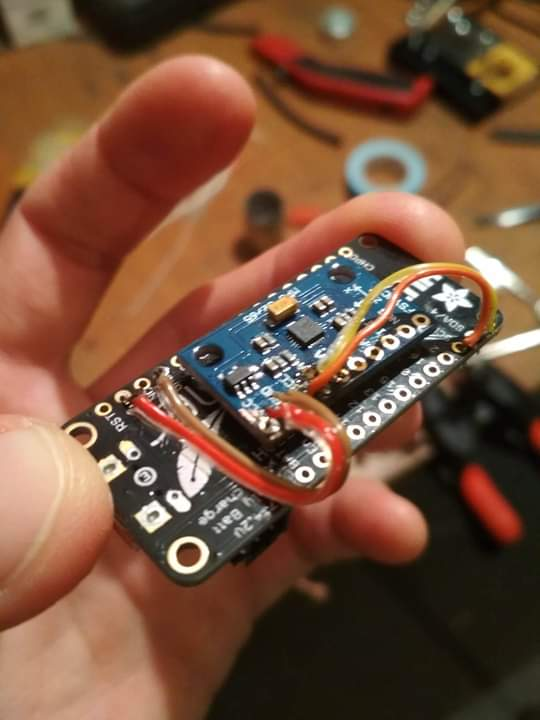
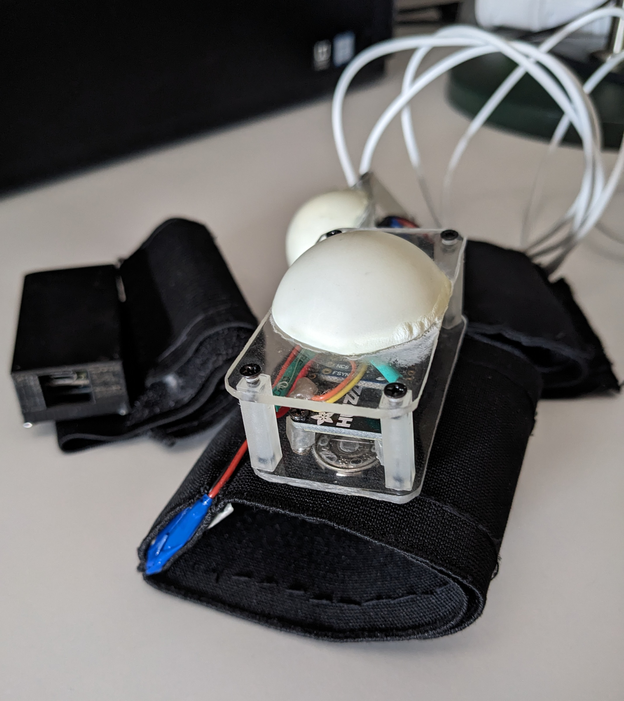
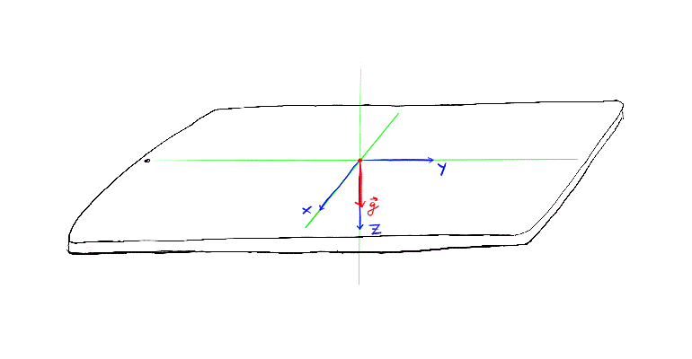
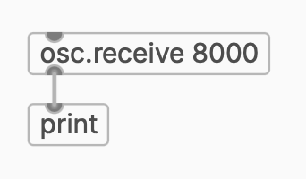
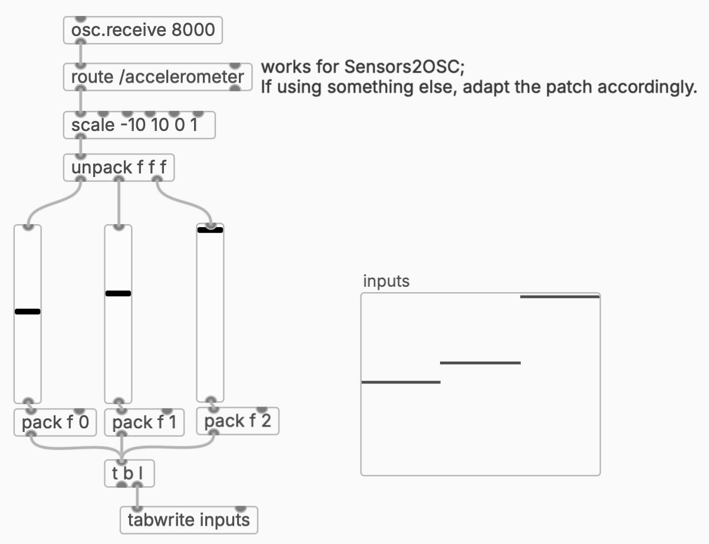
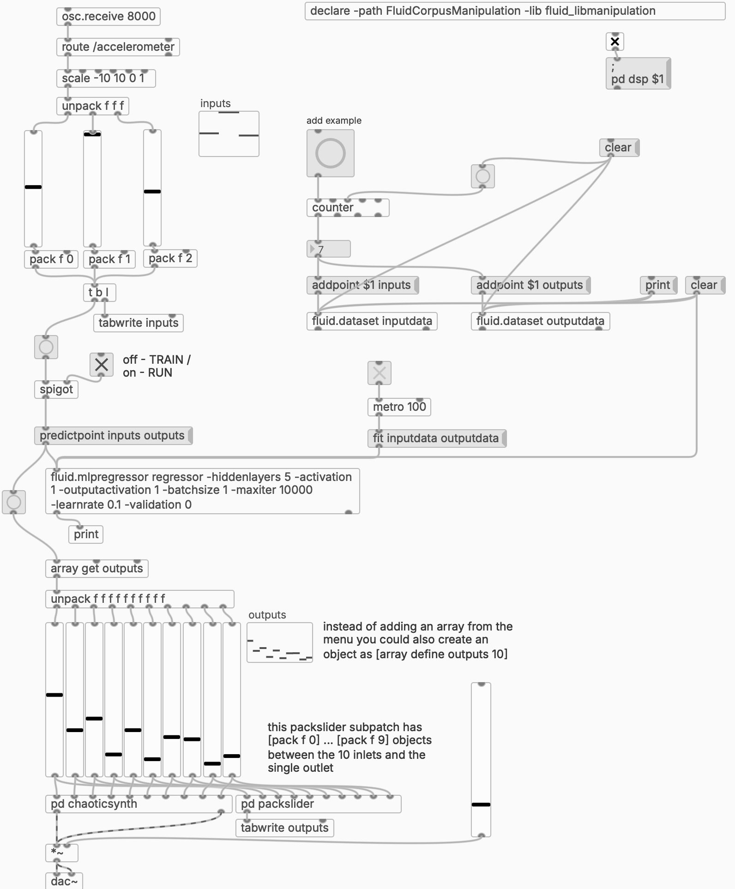

Motion to Sound with Regression
A basic interactive ML workflow to easily create mappings from motion to sound or other media outputs.
Input
I’m going to describe a simple schema, first popularized by Rebecca Fiebrink in her now classic Machine Learning for Musicians and Artists MOOC, to create sound-making instruments by example instead of by mathematical specification. Of course, a similar pattern can work for controlling other types of media, such as video, lights etc.
Here’s a quick taste of how it can work, recorded in our April ‘26 workshop in Genova as part of the Transper project.
Our input of choice will be motion , as described by relative movement of a point in 3D space by an IMU, aka accelerometer.(as opposed to absolute motion capture systems that report positions in space) How do you get your hands on an IMU? I think you have three major options: Make it. Buy it. Phone it.
Make it
This is probably the cheapest and most fun option, if you’re into tinkering with sensors and microcontrollers.And if you’re not, it’s a great beginner-friendly project to start with! IMU sensors are very accessible; a 3-axis one like the MPU6050 is fine but you can also go for a so-called 9-axis sensor like the MPU9250 if you think you might use e.g. the gyroscope in the future.
You then hook it up to an Arduino-compatible microcontroller with WiFiAn alternative to WiFi is Bluetooth, as seen for example in this DYI project and several products available online. and, preferably, LiPo battery power. In the past I’ve used Adafruit Feather boards.
Here’s what it turned out like for me: my very first soldering job back in 2019. I didn’t know how sensitive soldering wires directly into through-holes can be, but they’ve held up just fine since then!

My then-students Dorin and Maria helped with constructing fancy bracelets around 3 such sensor+board combos, with a pocket to house the LiPo battery and velcro to strap onto your wrist:

It’s then just a matter of getting Arduino code for your MPU sensor and configuring it to send OSC messages. Here’s one way to do it.
Buy it
There are off-the-shelf options if you just want to buy one of these pre-assembled. I haven’t used any of them myself but they should work fine. The ones I was able to find online are all using Bluetooth and not WiFi.
One version that I’d like to play with someday is the R-IOT, developed by IRCAM.Researching this I found this 2025 paper from IRCAM on IMU sensors in performing arts, which looks like a good resource if you want to learn more. Good luck finding it in stock.
The main drawback for all of these would have to be the cost - a few times more expensive than making your own.
Phone it
But did you know you had an IMU sitting by your side all this time! Your phone uses an IMU to detect orientation. You just need an app that will let you access the sensor data and send it via OSC. For Android I currently (2026) use Sensors2OSC. For iPhone you can use SeeOSC.
Let’s take a moment to realise how the composition of forces acts on the phone’s (or any sensor’s) body. We have the gravitational pull acting straight down: this means that, if your phone is lying on a table, the acceleration \(\vec{g}\), of magnitude \(g = 9.8 m / s^2\), is acting solely on the z axis.
As you start to tilt your phone, you’ll see \(\vec{g}\) being decomposed along the accelerometer’s other axes as well:

We can observe that, especially if we don’t make sudden moves, the 3 values in the accelerometer describe the phone’s orientation relative to the ground.In fact, we have access to just two Euler angles: pitch and roll (Y and Z). The yaw (X), which would correspond to rotation around the Earth’s perpendicular, cannot be sensed by the accelerometer alone. For this a more complex device would be needed, such as a 9-axis IMU with sensor fusion.
{kind=link}
You can use one of those phone running armbands to hold your phone steady while you move. Overall, this solution is probably the most convenient, especially for things like public workshops and demonstrations. It’s also very handy in the prototyping stage of a project. I have used it once or twice for performances too, but I don’t consider it as reliable as the bespoke microcontroller option.
Mapping
After you have set up your Arduino or phone app to send OSC accelerometer values to your computer’s IP on a specific port (like 8000), it is time to build the software that will receive them and turn them into sound.
I will be using PlugData for this project, because it’s free, open source, and user friendly. But you can very easily adapt the patch to Max if you prefer.
Create an OSC listener and look at the console output.

You should see messages that look something like (for Sensors2OSC):
/accelerometer 0.0 0.0 9.8
or (other apps or Arduino scripts):
/accelerometer/x 0.0
/accelerometer/y 0.0
/accelerometer/z 9.8
First route the values out of the OSC messages.
Sometimes the numbers range between -1 and 1. You can leave them as is, or scale them yourself in Pd/Max to the 0.0-1.0 range.
In Pd you want to add an array (the Add object button > Array in PlugData) to store the values. The result should look something like this:

Now make sure that as you move your sensor, the values move in the vsliders and the inputs array.
The interactive ML pipeline is made possible by tools like Wekinator, or, if you want to remain in the Pd (or Max) environment, I recommend you use FluCoMa. Its MLPRegressor module implements a feed-forward neural network which can learn continuous mappings between inputs and outputs–exactly what we’re going for here.
The remaining steps are pretty much identical to the FluCoMa tutorial on regression, which I am embedding below. See also the resources in the video description and on the FluCoMa website. They also have an equivalent tutorial video for Max.
Your final Pd patch should look something like this:

You do the training and the performance just as explained in the video, except now instead of dragging sliders to set the input, you change the orientation of your physical sensor, which sets the sliders in the patch. So the sequence is: (1) set an output sound, (2) set a sensor position, (3) click the “add example” button, and repeat. Once all examples are in, train the regressor and then switch the toggle into the RUN setting.
Results
Here you can see in Genova one of the students interacting with the system for the first time:
Of course, this is just the beginning. You can replace the outputThe first question in the workshop was, understandably, can this be used with something that doesn’t sound like random noises? with some other parametric instrument or mix, or something in a totally different medium, like RGB lights or physical motors. But the principle, of associating input-output pairs and then being able to interpolate between (and extrapolate beyond) the given examples, remains.